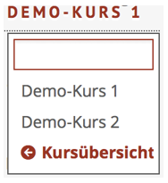

After logging in, you can see your course overview, where the learning modules are listed.
You can create new courses and administer existing modules.
After logging in, you can see your course overview, where the learning modules are listed.
You can create new courses and administer existing modules.
User interface of a learning module
To edit a learning module, click on the name of the course in the course overview. Then the screen is optically divided into three sections:

On the left side the navigation of the learning module is displayed. You can add pages, remove pages, rename pages and duplicate pages.
On the right side the „instructional devices“ (iDevices) are listed. iDevices are structural templates for each page.
The editing of the content is done in the main area in the middle of the page. Here you can switch between the following four areas:
| Edit content | Content editing and pasting iDevices |
| Choose layout | Choosing the layout |
| Download package | Export of the learning module |
| Metadata | Additional information on the learning module |
To switch to another module or to course overview, click on the title of the open course at the top on the right. You can select the desired module in the drop-down menu (the course overview is listed at the bottom by default).
